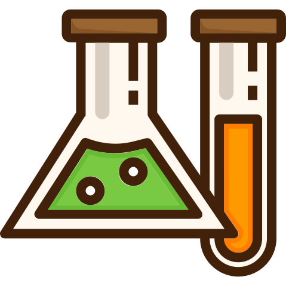

Онлайн-курс
Репетитор по химии
Подготовка к ЦТ и ЦЭ 2024
с нуля
Онлайн-курс
с нуля
Приветствую! Меня зовут
Корнилова Александра Сергеевна
Более 8 лет я работаю репетитором по химии 
 Подготовка абитуриентов к сдаче ЦТ по химии,
устранение пробелов в школьных знаниях - моя основная
деятельность.
Подготовка абитуриентов к сдаче ЦТ по химии,
устранение пробелов в школьных знаниях - моя основная
деятельность.
Также я веду блоги по химии в  ТикТок (3,5 тысячи подписчиков) и в
Инстаграм.
ТикТок (3,5 тысячи подписчиков) и в
Инстаграм.
Образование: Высшее медицинское образование, красный диплом, окончила Гомельский государственный медицинский университет, врач-специалист хирургического профиля.


Продолжительность занятия - 90 минут.
Занятия проходят 2 раза в неделю: первое занятие это видеоурок с разбором всей теории, а второе занятие – практический вебинар, где мы будем разбирать Ваше домашнее задание (тесты, цепочки, задачи на основе ЦТ) и возникшие по теории вопросы.
Также в доступе будет чат с поддержкой 24/7, конспекты, презентации.
Главный плюс любого онлайн-курса — это экономия времени, Вам не нужно никуда ехать, и Вы можете заниматься со мной из любого города.
Я создала видеоуроки для того, чтобы Вы могли в любой момент их пересмотреть, даже спустя пару месяцев. Вы можете заниматься в любом месте в любое удобное для Вас время.
А на практическом вебинаре мы будем полностью отрабатывать теорию и разбирать все Ваши ошибки. Это очень удобно, поверьте :)
Не волнуйтесь, я 24/7 на связи и готова помочь! Задавайте свои вопросы в телеграмм-чат, я дополнительно объясню непонятный момент Вам лично.
Я даю всю необходимую информацию для успешной сдачи ЦТ. Программа занятий составлена в соответствии с программой МОРБ. На ЦТ для Вас все вопросы и темы будут знакомы.
Да, ко мне приходят ученики с разной степенью подготовки. Для меня главное – желание заниматься и мотивация ученика, и если подготовку начать вовремя, то никаких проблем не возникнет.
Можно позвонить по телефону +375259679081 или заполнить форму для записи.
Занятия оплачиваются один раз в месяц, оплата производится не позднее 30 числа месяца, предыдущего оплачиваемому.
Пересчета нет. При пропуске занятия (по любой причине) я предоставляю ученику весь необходимый материал и в индивидуальном порядке отвечаю на имеющиеся вопросы по теме. На ЦТ нельзя прийти и исключить те темы, которые были пропущены. Нужно знать все. Я предоставлю всю информацию, необходимую для полноценной подготовки.
Учитывая большой опыт работы со школьниками и абитуриентами разного стартового уровня знаний, возраста и способностей, в среднем за два месяца работы мы улучшали школьный балл на 2-3 балла (с 5 до 8), если говорить о ЦТ, то в 2020 году среди моих учеников средний результат составил 81 балл, самый способный набрал 97 баллов. В 2021 году – средний результат 77 баллов, самая способная ученица набрала 94 балла.